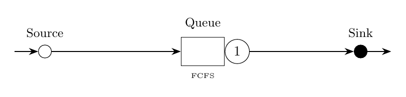

Tutorial 2: Multiclass M/G/1 Queue
This example considers a more challenging variant with two classes of incoming jobs with non-exponential service times. For the first class, service times are Erlang distributed; for the second class, they are read from a trace file. Both classes have exponentially distributed inter-arrival times.

% Example 2: A multiclass M/G/1 queue
model = Network('M/G/1');
source = Source(model,'Source');
queue = Queue(model, 'Queue', SchedStrategy.FCFS);
sink = Sink(model,'Sink');
jobclass1 = OpenClass(model, 'Class1');
jobclass2 = OpenClass(model, 'Class2');
source.setArrival(jobclass1, Exp(0.5));
source.setArrival(jobclass2, Exp(0.5));
queue.setService(jobclass1, Erlang.fitMeanAndSCV(1,1/3));
queue.setService(jobclass2, Replayer(which('example_trace.txt')));
P = model.initRoutingMatrix();
P.set(jobclass1, Network.serialRouting(source,queue,sink));
P.set(jobclass2, Network.serialRouting(source,queue,sink));
model.link(P);
jmtAvgTable = JMT(model,'seed',23000).avgTable()
queue.setService(jobclass2, Replayer(which('example_trace.txt')).fitAPH());
mamAvgTable = MAM(model).avgTable()// Block 1: Create network and nodes
val model = Network("M/G/1")
val source = Source(model, "Source")
val queue = Queue(model, "Queue", SchedStrategy.FCFS)
val sink = Sink(model, "Sink")
// Block 2: Create job classes
val jobclass1 = OpenClass(model, "Class1")
val jobclass2 = OpenClass(model, "Class2")
// Set arrival processes
source.setArrival(jobclass1, Exp(0.5))
source.setArrival(jobclass2, Exp(0.5))
// Set service processes
queue.setService(jobclass1, Erlang.fitMeanAndSCV(1.0, 1.0/3.0))
queue.setService(jobclass2, Replayer(fileName).fitAPH())
// Block 3: Define topology using routing matrix
val P = model.initRoutingMatrix()
P.set(jobclass1, Network.serialRouting(source, queue, sink))
P.set(jobclass2, Network.serialRouting(source, queue, sink))
model.link(P)
// Block 4: Solve using JMT solver
val avgTable = JMT(model, "seed", 23000).avgTable
avgTable.print()from line_solver import *
model = Network('M/G/1')
source = Source(model, 'Source')
queue = Queue(model, 'Queue', SchedStrategy.FCFS)
sink = Sink(model, 'Sink')
jobclass1 = OpenClass(model, 'Class1')
jobclass2 = OpenClass(model, 'Class2')
source.set_arrival(jobclass1, Exp(0.5))
source.set_arrival(jobclass2, Exp(0.5))
queue.set_service(jobclass1, Erlang.fit_mean_and_scv(1.0, 1/3))
queue.set_service(jobclass2, Replayer(lineRootFolder() +
"/examples/gettingstarted/example_trace.txt").fit_aph())
P = model.init_routing_matrix()
P.set(jobclass1, Network.serial_routing(source,queue,sink))
P.set(jobclass2, Network.serial_routing(source,queue,sink))
model.link(P)
jmtAvgTable = JMT(model, seed=23000).avg_table()
mamAvgTable = MAM(model).avg_table()Expected Output (JMT solver)
jmtAvgTable =
Station JobClass QLen Util RespT ResidT ArvR Tput
_______ ________ _______ ________ _______ _______ _______ _______
Source Class1 0 0 0 0 0 0.50017
Source Class2 0 0 0 0 0 0.49114
Queue Class1 0.86153 0.4984 1.7389 1.7389 0.50017 0.49953
Queue Class2 0.43751 0.049184 0.85879 0.85879 0.49114 0.49064
Expected Output (MAM solver)
mamAvgTable =
Station JobClass QLen Util RespT ResidT ArvR Tput
_______ ________ _______ ________ _______ _______ ____ ____
Source Class1 0 0 0 0 0 0.5
Source Class2 0 0 0 0 0 0.5
Queue Class1 0.87646 0.5 1.7529 1.7529 0.5 0.5
Queue Class2 0.427 0.050536 0.85399 0.85399 0.5 0.5